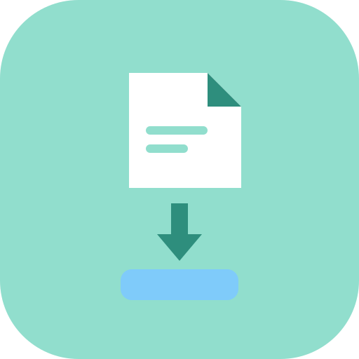
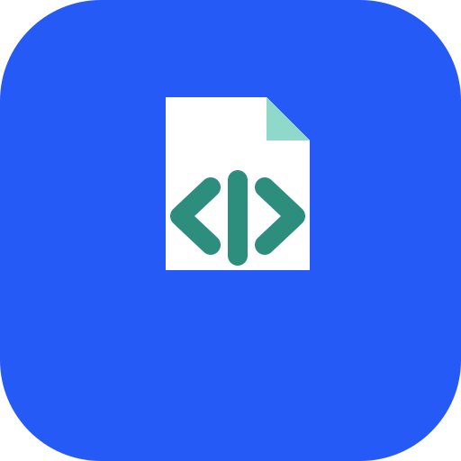

Breviora — набор решений из каталога приложений МойСклад. Подписанные УПД сами превращаются в приёмки, исходящие отгрузки сами уходят в Диадок на подпись.
Установка в один клик из каталога приложений. Пробный период — 14 дней.
Если вы работаете с ЭДО через Контур.Диадок и учитываете товары в МойСклад, документы приходится переносить вручную.
Поставщик прислал подписанный УПД в Диадок — и его нужно вручную забивать в МойСклад как приёмку. Каждая позиция, количество, цена, НДС.
Отгрузку оформили в МойСклад, а УПД для контрагента формируют отдельно — вручную или в сторонней программе, с риском расхождений.
Для Озон нужен XML определённого вида. Переделывать документ под каждый канал — отдельная рутина и источник ошибок.
Устанавливайте только то, что нужно. Каждое решение работает отдельно в каталоге МойСклад.

Забирает подписанные входящие УПД из Диадока и создаёт приёмки в МойСклад. Организация и контрагент подбираются по ИНН, позиции — по артикулу.
Формирует стандартный УПД из отгрузки МойСклад и отправляет его в Диадок как черновик на подпись.

Создаёт XML в формате Озон для отгрузки и прикрепляет файл к документу в МойСклад.
Откройте каталог приложений в МойСклад, найдите Breviora и нажмите «Установить». Подтвердите доступ к аккаунту.
В настройках решения авторизуйтесь в Контур.Диадок через ваш аккаунт — это одноразовый вход с 2FA.
Кнопки появляются прямо на документах в МойСклад. Нажимайте — остальное решение делает само.
Оплата — через биллинг МойСклад, как и само решение. Пробный период 14 дней на каждый тариф.
Входящие УПД → приёмки автоматически.
Отгрузки → УПД в Диадок на подпись.
Отгрузки → XML в формате Озон.
Цены предварительные и могут быть скорректированы до публикации в каталоге.
Установите нужное решение и проверьте его на своих документах в течение 14 дней — бесплатно.
Установить из каталога